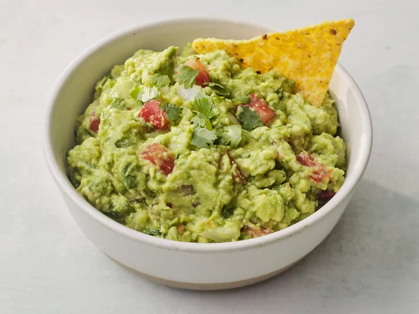

Home
Guacamole Recipe

Description
This delicious guacamole recipe is quick and easy to make. Recipe taken from Maryellen at
AllRecipes.
Ingredients
- 3 avocados - peeled, pitted, and mashed
- 1 lime, juiced
- 1 teaspoon salt or to taste
- 2 roma (plum) tomatoes, diced
- 1/2 cup diced onion
- 3 tablespoons chopped fresh cilantro
- 1 teaspoon minced garlic
- 1 pinch ground cayenne pepper (Optional)
Steps
- Gather all ingredients.
- Mash avocados, lime juice, and salt together in a medium bowl; mix in tomatoes, onion, cilantro, and garlic.
- Stir in cayenne pepper. Serve immediately, or cover and refrigerate for 1 hour for improved flavor.